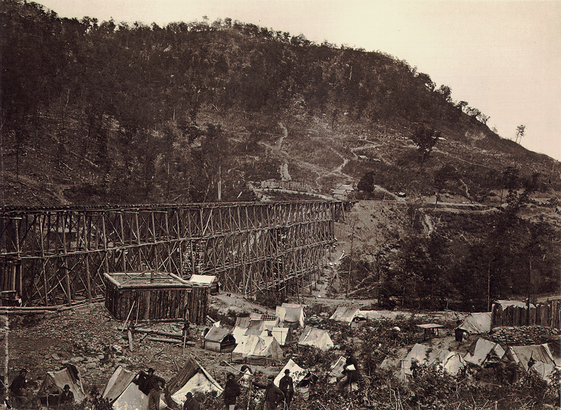

"On the 10th the men were roused early to prepare for the march. The night had been intensely cold and stormy, freezing the ground hard. The weather was the coldest yet experienced in Kentucky. Tents were struck, wagons loaded and the march northward began. Soon after the column had started, news came that our army under General Grant had attacked Fort Donelson on the Cumberland River, and that the battle was then in progress. The effect of this news upon the men was almost magical. They marched more rapidly from their eagerness to get there in time to take a hand in the fight. That night the command stopped at Upton, fourteen miles north of Munfordville. Owing to the bad conditions of the roads, the trains were unable to reach them, and the men had to lie upon the frozen ground without covering other than the blue vault overhead. The night was clear and very cold. The ground froze hard. The men tried to keep comfortable by burning the top rails of the fences."
"The movement south began on the 26th, when the division crossed the river in boats, and bivouacked on the south bank. The following day the march was resumed, and the camp was pitched that night near Franklin, Kentucky, twenty-one miles from the river. On the 28th the command marched twenty-two miles, about seven of which were through feilds and on railroads, as the turnpike had been ploughed up in order to retard the the progress of the Union army. As the wagons could not keep up with the marching column of troops, the men were on very short rations, each receiving only a very small piece of soft bread during the entire day. On the first day of the march, fourteen miles were covered before breakfast to Camp Negley, at the railroad junction."
-From John Obreiter's regimental history